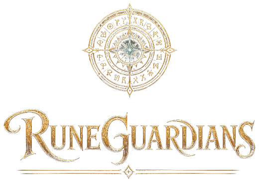
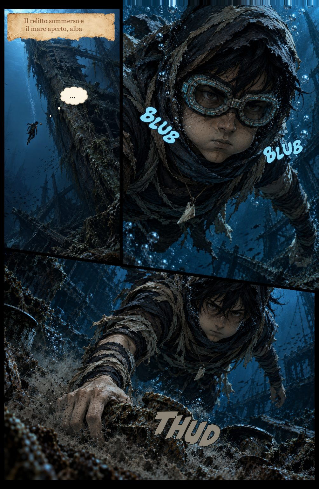
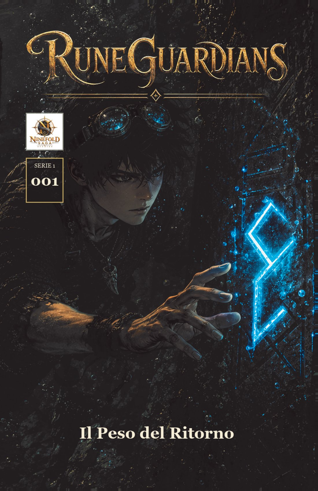
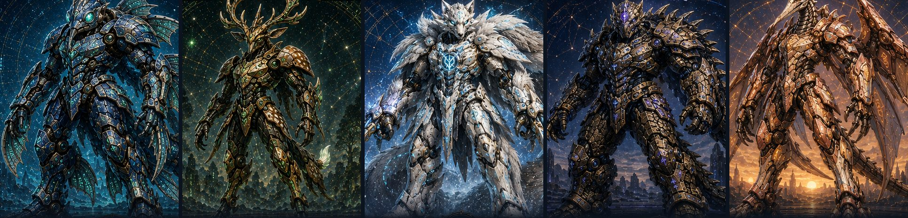
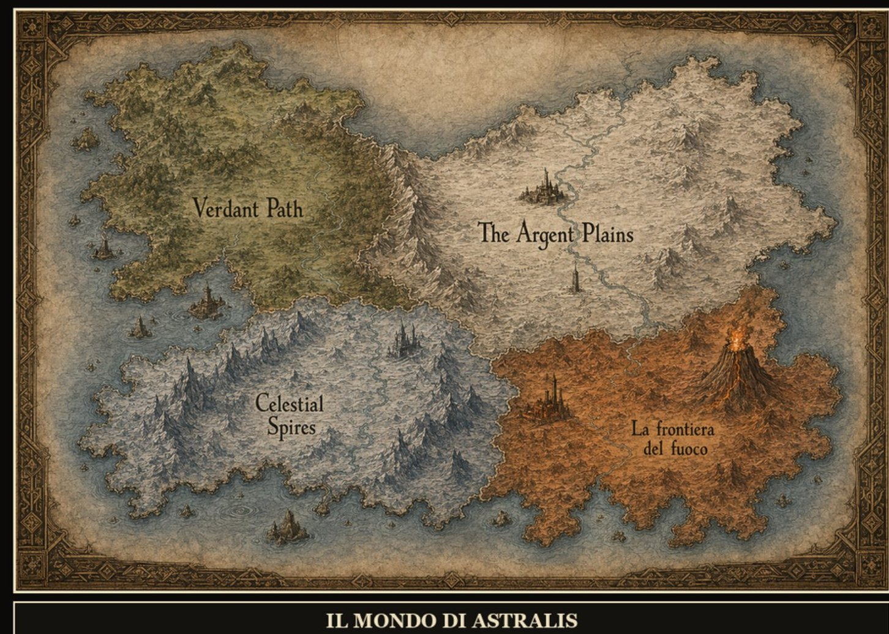

Astralis ha .
Cinque Eredi devono ricordare.
RuneGuardians — Il Peso del Ritorno: il primo albo di una saga Ancient Future Fantasy, 48 tavole già illustrate e letterate, su Kickstarter ora.


La campagna si chiude tra
La campagna è conclusa. Grazie a chi c'è stato.
Astralis ha costruito tutto sulla memoria: i Nomi, i Testimoni, la Continuità. Poi l'ha persa. È un mondo antico che non ricorda nemmeno il nome di ciò che sta tornando: la Risonanza, il risveglio delle Rune.
Ora le Rune ricominciano a chiamare. Sogni condivisi, glifi che si accendono, Totem che si manifestano a uomini e donne comuni. Cinque Eredi, chiamati dalle Rune, si trovano davanti a una guerra che nessuno di loro ha cercato: l'hanno ereditata. Dall'altra parte c'è qualcuno che li osserva da sempre, arriva un passo prima e non uccide: cancella.
Comincia da Emeric Fenn, un recuperatore che si immerge nei relitti dove gli altri non scendono. Quello che riporta a galla non è un rottame.
Destiny is a prison. Choice is a revolution.

Non compri una promessa. L'albo esiste già.
Il Peso del Ritorno — Serie 1, Numero 1 — è finito: 48 tavole di storia, illustrate e letterate, più copertina e retrocopertina. I file di stampa sono chiusi e il tipografo è scelto. La campagna Kickstarter serve a una cosa precisa: la stampa professionale dell'albo, con obiettivo di €15.000.
Dietro il primo numero c'è un mondo già costruito: sei serie strutturate per 144 numeri, 60 Guardiani con nome, Totem e fazione, e le 60 Rune, ognuna col suo emblema disegnato. Il Numero 1 è la porta d'ingresso.
- 48 tavole pronte. Illustrate, letterate, impaginate per la stampa. Non un progetto: un albo.
- Un obiettivo concreto. €15.000 per la stampa professionale del Numero 1. Kickstarter è tutto-o-niente: se l'obiettivo non si raggiunge, non paghi nulla.
- Un mondo che continua. Sei serie già strutturate, 60 Guardiani, 60 Rune con i loro emblemi. Qui inizia, non finisce.
Enzo Pellacani
Un solo creatore: mondo, personaggi, struttura delle sei serie e art direction nascono e restano nelle stesse mani. Nessun editore, nessuna cessione di diritti — il mondo resta di chi lo ha creato, e voi ne ricevete un pezzo.
Guarda il trailer
Novanta secondi dentro Astralis: la Runa che chiama, i luoghi del mondo, le tavole del Numero 1.
Founder's Circle · copia n° __ / 100
La campagna è aperta. Cento copie numerate.
Il tier Founder's Circle esiste in 100 copie: Numero 1 con copertina variant esclusiva, numerata da 1 a 100, e il tuo nome nei ringraziamenti ufficiali. Quando finiscono, finiscono.
La campagna è aperta ora, e chiude a breve — il conto alla rovescia qui sopra segna quanto manca. Arrivare primi conta due volte: le copie numerate 1–100 sono di chi prende il Founder's Circle per primo, e i primi 100 sostenitori in assoluto — con qualunque ricompensa, anche la sola copia — ricevono l'albo nella prima ondata di spedizione. L'ordine d'arrivo lo registra Kickstarter al secondo.
E il primo regalo arriva subito: nella email di benvenuto trovi l'accesso all'area riservata «Il Mondo di RuneGuardians» — i Guardiani ratificati nel canone, i luoghi di Astralis, le tavole d'evoluzione delle Armature. Solo per chi è in lista.
Nessun costo, nessun impegno: iscriversi ti garantisce solo di non arrivare secondo.

Entra nel Mondo di RuneGuardians
Chi si iscrive non aspetta a mani vuote: riceve subito l'accesso all'area riservata del Mondo — la mappa di Astralis, i Guardiani già ratificati nel canone con nome, Totem e fazione, i luoghi con le loro atmosfere, le tavole d'evoluzione delle Armature.
Il Mondo cresce numero dopo numero, e chi è in lista lo scopre in anteprima: prima che venga pubblicato, prima di chiunque altro.
Iscriviti e entra nel MondoRuneGuardians è il mondo che Enzo Pellacani ha costruito documento dopo documento — la Risonanza, le fazioni, i Totem, i 60 Guardiani — prima ancora di pensarlo come fumetto. Con il Numero 1, quel mondo diventa carta per la prima volta.